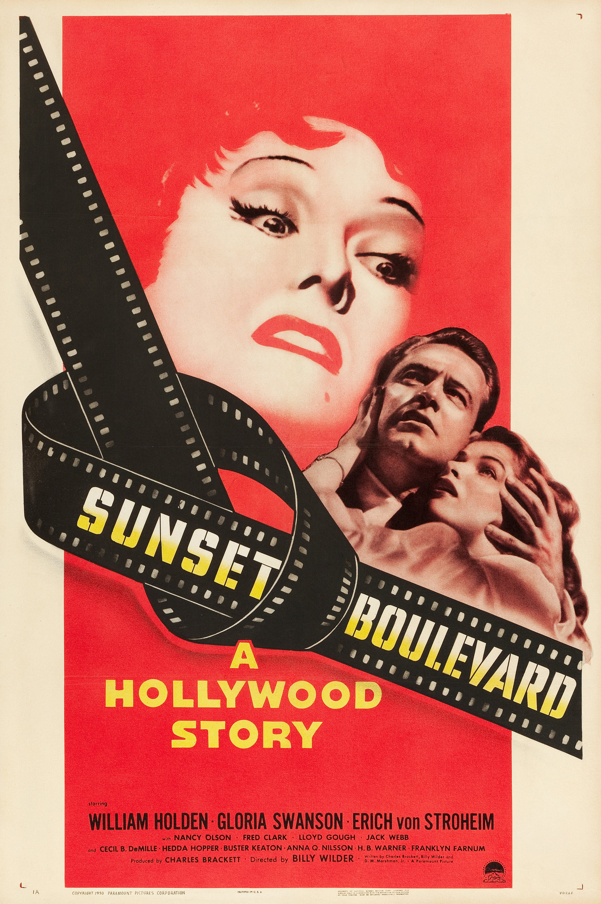

Sunset Blvd.
23rd Academy Awards
(Oscars 1951)
11 Nominations, 3 Awards
| Nominations | ||
|---|---|---|
| Category | Nominees | Result |
| Best Motion Picture | Paramount | Nominated |
| Actor | William Holden | Nominated |
| Actress | Gloria Swanson | Nominated |
| Actor in a Supporting Role | Erich von Stroheim | Nominated |
| Actress in a Supporting Role | Nancy Olson | Nominated |
| Directing | Billy Wilder | Nominated |
| Writing (Story and Screenplay) | Billy Wilder, Charles Brackett, and D. M. Marshman, Jr. | Won |
| Cinematography (Black-and-White) | John F. Seitz | Nominated |
| Film Editing | Arthur Schmidt and Doane Harrison | Nominated |
| Art Direction (Black-and-White) | Hans Dreier, John Meehan, Ray Moyer, and Sam Comer | Won |
| Music (Music Score of a Dramatic or Comedy Picture) | Franz Waxman | Won |